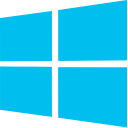

Please do not redistribute these download links. If you download
the simulator from somewhere other than this website or our
official Discord server, then we cannot guarantee its legitimacy
or safety.
1 GB free disk space recommended for resource files, images, and
automatic updates.
1 GB free RAM recommended, though
EDOPro is not expected to exceed 300 MB of memory unless the
restart button is spammed.

Requirements
● Windows XP Service Pack 3 or later (the program will run
on any architecture)
● DirectX 9 or OpenGL supporting graphics driver
● .NET Framework 4 to use the AI (pre-installed
on Windows 10 and later)
Instructions
Select one of the following download options. They have the
same features and customizability, but the installer is the
easiest to set up and strongly recommended. Your antivirus
may flag these downloads, EDOPro, or WindBot as malware, but
these are false positives. Our software components are
free/libre and open-source on GitHub.
Standard installer (67.9 MB)
MD5:
5a92d861649e4217b09cd2a519af3ba5
Download and run the above .exe to install to
C:\ProjectIgnis. After it is finished, you
should see shortcuts on your desktop and Start Menu.
Do not extract to a read-only location such as Program
Files.
Self-extracting archive (66.4 MB)
MD5:
f784def05f008e6093e384ed11a55cf2
ZIP (90.4 MB)
MD5:
da39df030fc95f570cec6320e2e232ca
For advanced users only

Requirements
● Universal binary (Intel and M1)
● macOS 10.9 or later
● OpenGL supporting graphics card
● For AI support, install
Mono
(either download option is fine)
Instructions
Download and run the following. You may need to allow
unidentified developers in your System Preferences or
right-click and hit Open instead. After installation, you
should see an EDOPro icon in Launchpad.
Installer (91.7 MB)
MD5:
4b19ebfa4b041b208be9662d48bc61c7

Requirements
● x64 or AArch64 GNU/Linux with X11 or Wayland and glibc 2.27+ (e.g. Debian
10+, Ubuntu 18.04+, Fedora, CentOS 8+, rolling release
distros like Arch)
● OpenGL supporting graphics driver
● For AI support, install the
mono-complete package
Instructions
1) Download and extract the .tar.gz matching
your system architecture to your preferred install
location.
2) Optionally run ./install.sh to create
.desktop files for the current user's launcher.
There should be no output if successful. Do not run
as root (sudo/doas).
3) You can always start the game by running
./EDOPro from the extracted folder without
desktop files.
Game folder (x64) .tar.gz (80.9 MB)
MD5:
4d05c408a4732cfe8dd0d16ad97342bf
Game folder (AArch64) .tar.gz (80.6 MB)
MD5:
61f186202535fdb210a2762e40bc69a2
Note
Staff do not have Chromebooks so we are unable to
assist further, but if you install a compatible Linux distribution on
Chromebook, this binary may work.

Requirements
● Android 4.1 "Jelly Bean" or newer
APK (126 MB)
MD5:
bf08d55a35099429f7989ca64b6dbd29